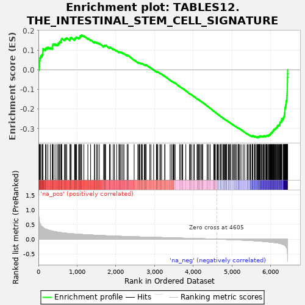

| | | Dataset | al10_v_al5 |
| Phenotype | NoPhenotypeAvailable |
| Upregulated in class | na_neg |
| GeneSet | TABLES12.THE_INTESTINAL_STEM_CELL_SIGNATURE |
| Enrichment Score (ES) | -0.345376 |
| Normalized Enrichment Score (NES) | NaN |
| Nominal p-value | NaN |
| FDR q-value | 1.0 |
| FWER p-Value | 0.0 |
Table: GSEA Results Summary

Fig 1: Enrichment plot: TABLES12.THE_INTESTINAL_STEM_CELL_SIGNATURE
Profile of the Running ES Score & Positions of GeneSet Members on the Rank Ordered List
| PROBE | GENE SYMBOL | GENE_TITLE | RANK IN GENE LIST | RANK METRIC SCORE | RUNNING ES | CORE ENRICHMENT | | 1 | Stmn1 | | | 17 | 0.711 | 0.0167 | No |
| 2 | Esco2 | | | 28 | 0.600 | 0.0315 | No |
| 3 | Cenpf | | | 33 | 0.559 | 0.0461 | No |
| 4 | Hirip3 | | | 39 | 0.542 | 0.0601 | No |
| 5 | Hells | | | 59 | 0.491 | 0.0704 | No |
| 6 | Nusap1 | | | 93 | 0.431 | 0.0768 | No |
| 7 | Mcm5 | | | 111 | 0.416 | 0.0854 | No |
| 8 | Incenp | | | 113 | 0.414 | 0.0966 | No |
| 9 | Dtl | | | 116 | 0.409 | 0.1075 | No |
| 10 | Fads1 | | | 181 | 0.346 | 0.1065 | No |
| 11 | Cep192 | | | 202 | 0.335 | 0.1124 | No |
| 12 | Nap1l1 | | | 244 | 0.317 | 0.1144 | No |
| 13 | Nhp2 | | | 307 | 0.292 | 0.1123 | No |
| 14 | Aspm | | | 359 | 0.276 | 0.1116 | No |
| 15 | Ckap2 | | | 360 | 0.275 | 0.1191 | No |
| 16 | Mcm3 | | | 364 | 0.274 | 0.1261 | No |
| 17 | Ttk | | | 380 | 0.269 | 0.1310 | No |
| 18 | Cdk4 | | | 428 | 0.255 | 0.1304 | No |
| 19 | Aqp4 | | | 479 | 0.243 | 0.1289 | No |
| 20 | Nup210 | | | 513 | 0.236 | 0.1299 | No |
| 21 | Pole | | | 516 | 0.235 | 0.1360 | No |
| 22 | Palb2 | | | 542 | 0.230 | 0.1383 | No |
| 23 | Ccnb1 | | | 549 | 0.227 | 0.1435 | No |
| 24 | Pou2f1 | | | 583 | 0.222 | 0.1442 | No |
| 25 | Haus4 | | | 584 | 0.222 | 0.1503 | No |
| 26 | Chek2 | | | 593 | 0.220 | 0.1550 | No |
| 27 | Rad50 | | | 603 | 0.218 | 0.1595 | No |
| 28 | AU020206 | | | 674 | 0.207 | 0.1537 | No |
| 29 | Mcm7 | | | 690 | 0.204 | 0.1569 | No |
| 30 | Rpa2 | | | 707 | 0.203 | 0.1598 | No |
| 31 | Mcm6 | | | 731 | 0.200 | 0.1615 | No |
| 32 | Cdca5 | | | 816 | 0.188 | 0.1530 | No |
| 33 | Isyna1 | | | 819 | 0.188 | 0.1578 | No |
| 34 | Nrm | | | 821 | 0.188 | 0.1628 | No |
| 35 | Psip1 | | | 848 | 0.185 | 0.1636 | No |
| 36 | Brca2 | | | 934 | 0.177 | 0.1546 | No |
| 37 | Cps1 | | | 937 | 0.177 | 0.1591 | No |
| 38 | Trim37 | | | 955 | 0.175 | 0.1612 | No |
| 39 | Mcm4 | | | 967 | 0.174 | 0.1641 | No |
| 40 | Pola2 | | | 984 | 0.172 | 0.1662 | No |
| 41 | Mcm2 | | | 1037 | 0.168 | 0.1623 | No |
| 42 | Cnn3 | | | 1058 | 0.166 | 0.1636 | No |
| 43 | Eri1 | | | 1073 | 0.164 | 0.1658 | No |
| 44 | Hmgb3 | | | 1080 | 0.163 | 0.1693 | No |
| 45 | Hmgn1 | | | 1082 | 0.163 | 0.1736 | No |
| 46 | Rtn4 | | | 1109 | 0.161 | 0.1738 | No |
| 47 | Psrc1 | | | 1118 | 0.159 | 0.1768 | No |
| 48 | Nfic | | | 1174 | 0.155 | 0.1721 | No |
| 49 | Ccdc18 | | | 1277 | 0.147 | 0.1595 | No |
| 50 | Pck2 | | | 1348 | 0.142 | 0.1520 | No |
| 51 | Mfge8 | | | 1447 | 0.134 | 0.1398 | No |
| 52 | Txndc16 | | | 1451 | 0.134 | 0.1430 | No |
| 53 | Clic4 | | | 1501 | 0.130 | 0.1385 | No |
| 54 | Tiam1 | | | 1530 | 0.129 | 0.1375 | No |
| 55 | Apex1 | | | 1572 | 0.127 | 0.1343 | No |
| 56 | Arsb | | | 1687 | 0.119 | 0.1190 | No |
| 57 | Wdr90 | | | 1692 | 0.119 | 0.1216 | No |
| 58 | Mif | | | 1704 | 0.118 | 0.1231 | No |
| 59 | Ifitm3 | | | 1723 | 0.117 | 0.1233 | No |
| 60 | Nfib | | | 1736 | 0.116 | 0.1246 | No |
| 61 | Cdo1 | | | 1834 | 0.111 | 0.1118 | No |
| 62 | Kif20a | | | 1838 | 0.110 | 0.1144 | No |
| 63 | Ifitm2 | | | 1858 | 0.110 | 0.1143 | No |
| 64 | Chchd6 | | | 1932 | 0.106 | 0.1053 | No |
| 65 | Cd320 | | | 1962 | 0.104 | 0.1034 | No |
| 66 | Paics | | | 2020 | 0.102 | 0.0969 | No |
| 67 | Tbc1d4 | | | 2080 | 0.099 | 0.0900 | No |
| 68 | Brd8 | | | 2091 | 0.098 | 0.0911 | No |
| 69 | Dnajc9 | | | 2112 | 0.097 | 0.0905 | No |
| 70 | Kcnq1 | | | 2141 | 0.095 | 0.0885 | No |
| 71 | Macrod1 | | | 2179 | 0.093 | 0.0851 | No |
| 72 | Gins4 | | | 2209 | 0.092 | 0.0829 | No |
| 73 | Chek1 | | | 2292 | 0.088 | 0.0719 | No |
| 74 | Fam60a | | | 2293 | 0.088 | 0.0744 | No |
| 75 | Phgdh | | | 2318 | 0.087 | 0.0728 | No |
| 76 | Pde3b | | | 2472 | 0.081 | 0.0502 | No |
| 77 | Sntb2 | | | 2567 | 0.077 | 0.0370 | No |
| 78 | Ilf3 | | | 2588 | 0.076 | 0.0358 | No |
| 79 | Arl4c | | | 2610 | 0.075 | 0.0345 | No |
| 80 | Ppat | | | 2619 | 0.075 | 0.0352 | No |
| 81 | Eri2 | | | 2659 | 0.073 | 0.0309 | No |
| 82 | Dapk2 | | | 2667 | 0.073 | 0.0317 | No |
| 83 | Wee1 | | | 2683 | 0.072 | 0.0313 | No |
| 84 | Immp2l | | | 2731 | 0.070 | 0.0256 | No |
| 85 | Spice1 | | | 2750 | 0.070 | 0.0245 | No |
| 86 | Zmym1 | | | 2772 | 0.069 | 0.0230 | No |
| 87 | Mpzl1 | | | 2778 | 0.069 | 0.0241 | No |
| 88 | Urod | | | 2782 | 0.068 | 0.0254 | No |
| 89 | Atr | | | 2877 | 0.064 | 0.0119 | No |
| 90 | Ppp1r1b | | | 2905 | 0.064 | 0.0093 | No |
| 91 | Nmral1 | | | 2976 | 0.062 | -0.0004 | No |
| 92 | Mbp | | | 3047 | 0.058 | -0.0102 | No |
| 93 | Plce1 | | | 3053 | 0.058 | -0.0094 | No |
| 94 | Nfia | | | 3066 | 0.058 | -0.0098 | No |
| 95 | Ivd | | | 3084 | 0.057 | -0.0110 | No |
| 96 | Prelp | | | 3136 | 0.056 | -0.0178 | No |
| 97 | Surf2 | | | 3154 | 0.055 | -0.0190 | No |
| 98 | Kcne3 | | | 3182 | 0.054 | -0.0219 | No |
| 99 | Fam92a | | | 3262 | 0.051 | -0.0334 | No |
| 100 | Zfp629 | | | 3268 | 0.051 | -0.0328 | No |
| 101 | Nrtn | | | 3402 | 0.046 | -0.0532 | No |
| 102 | Wdr55 | | | 3438 | 0.045 | -0.0577 | No |
| 103 | Poglut1 | | | 3472 | 0.043 | -0.0619 | No |
| 104 | Isg20l2 | | | 3491 | 0.043 | -0.0636 | No |
| 105 | Rrp1b | | | 3508 | 0.042 | -0.0651 | No |
| 106 | Zfp422 | | | 3531 | 0.041 | -0.0675 | No |
| 107 | Uhrf2 | | | 3646 | 0.036 | -0.0851 | No |
| 108 | Evl | | | 3677 | 0.035 | -0.0890 | No |
| 109 | Smad5 | | | 3708 | 0.034 | -0.0929 | No |
| 110 | Tnfsf10 | | | 3727 | 0.033 | -0.0950 | No |
| 111 | Pkig | | | 3807 | 0.030 | -0.1070 | No |
| 112 | Napepld | | | 3906 | 0.027 | -0.1222 | No |
| 113 | Pds5b | | | 3911 | 0.027 | -0.1221 | No |
| 114 | Notch1 | | | 3927 | 0.027 | -0.1238 | No |
| 115 | Ascl2 | | | 3961 | 0.026 | -0.1284 | No |
| 116 | H2-Eb1 | | | 4016 | 0.023 | -0.1366 | No |
| 117 | Ung | | | 4024 | 0.023 | -0.1371 | No |
| 118 | Impdh2 | | | 4097 | 0.020 | -0.1482 | No |
| 119 | Phlpp1 | | | 4114 | 0.019 | -0.1503 | No |
| 120 | Grb7 | | | 4124 | 0.019 | -0.1513 | No |
| 121 | Bcl7a | | | 4139 | 0.019 | -0.1530 | No |
| 122 | Lancl1 | | | 4163 | 0.017 | -0.1563 | No |
| 123 | Sycn | | | 4174 | 0.017 | -0.1574 | No |
| 124 | Dkc1 | | | 4208 | 0.016 | -0.1624 | No |
| 125 | Slc27a1 | | | 4223 | 0.015 | -0.1642 | No |
| 126 | Trim44 | | | 4245 | 0.014 | -0.1673 | No |
| 127 | Irf2bp2 | | | 4246 | 0.014 | -0.1669 | No |
| 128 | Dctd | | | 4358 | 0.010 | -0.1847 | No |
| 129 | Efna4 | | | 4361 | 0.009 | -0.1847 | No |
| 130 | Kank1 | | | 4397 | 0.008 | -0.1902 | No |
| 131 | Trim28 | | | 4435 | 0.006 | -0.1961 | No |
| 132 | Csnk1e | | | 4529 | 0.003 | -0.2111 | No |
| 133 | Lrig1 | | | 4532 | 0.003 | -0.2113 | No |
| 134 | Lipt2 | | | 4548 | 0.002 | -0.2137 | No |
| 135 | Zfp318 | | | 4559 | 0.002 | -0.2153 | No |
| 136 | Cbx6 | | | 4569 | 0.001 | -0.2167 | No |
| 137 | Psd3 | | | 4611 | -0.000 | -0.2234 | No |
| 138 | Bcl11a | | | 4625 | -0.001 | -0.2255 | No |
| 139 | Alms1 | | | 4637 | -0.002 | -0.2272 | No |
| 140 | Zfp280d | | | 4662 | -0.002 | -0.2311 | No |
| 141 | Dtd1 | | | 4697 | -0.004 | -0.2365 | No |
| 142 | Myc | | | 4710 | -0.004 | -0.2383 | No |
| 143 | Nr2e3 | | | 4719 | -0.005 | -0.2395 | No |
| 144 | Msh2 | | | 4721 | -0.005 | -0.2395 | No |
| 145 | Lzts2 | | | 4761 | -0.006 | -0.2457 | No |
| 146 | Spin1 | | | 4774 | -0.007 | -0.2474 | No |
| 147 | Ephb2 | | | 4790 | -0.008 | -0.2497 | No |
| 148 | Gpld1 | | | 4793 | -0.008 | -0.2498 | No |
| 149 | Rbm38 | | | 4817 | -0.009 | -0.2532 | No |
| 150 | Enpp1 | | | 4827 | -0.010 | -0.2544 | No |
| 151 | Fzd7 | | | 4849 | -0.011 | -0.2575 | No |
| 152 | Agr3 | | | 4853 | -0.012 | -0.2577 | No |
| 153 | Arhgap39 | | | 4858 | -0.012 | -0.2580 | No |
| 154 | Dtx4 | | | 4859 | -0.012 | -0.2577 | No |
| 155 | Glrx | | | 4901 | -0.014 | -0.2640 | No |
| 156 | Ncor2 | | | 4910 | -0.015 | -0.2649 | No |
| 157 | Sox9 | | | 4928 | -0.015 | -0.2672 | No |
| 158 | Zfp512 | | | 4943 | -0.016 | -0.2691 | No |
| 159 | Slc19a2 | | | 4967 | -0.017 | -0.2723 | No |
| 160 | Csad | | | 4971 | -0.017 | -0.2723 | No |
| 161 | Fhl2 | | | 5013 | -0.020 | -0.2785 | No |
| 162 | Aqp1 | | | 5031 | -0.021 | -0.2807 | No |
| 163 | Adra2a | | | 5060 | -0.022 | -0.2846 | No |
| 164 | Ces1d | | | 5070 | -0.022 | -0.2855 | No |
| 165 | Zfp740 | | | 5100 | -0.024 | -0.2896 | No |
| 166 | Sesn3 | | | 5107 | -0.024 | -0.2899 | No |
| 167 | Acss1 | | | 5152 | -0.027 | -0.2963 | No |
| 168 | Sema3b | | | 5171 | -0.028 | -0.2984 | No |
| 169 | Polr1a | | | 5172 | -0.029 | -0.2976 | No |
| 170 | Clic6 | | | 5177 | -0.029 | -0.2975 | No |
| 171 | Mpzl3 | | | 5199 | -0.030 | -0.3001 | No |
| 172 | Hes1 | | | 5233 | -0.032 | -0.3046 | No |
| 173 | Mcc | | | 5286 | -0.034 | -0.3121 | No |
| 174 | Slc25a4 | | | 5327 | -0.036 | -0.3176 | No |
| 175 | Atm | | | 5390 | -0.040 | -0.3266 | No |
| 176 | Sfrp5 | | | 5407 | -0.041 | -0.3281 | No |
| 177 | Mga | | | 5418 | -0.042 | -0.3286 | No |
| 178 | Maged1 | | | 5456 | -0.045 | -0.3334 | No |
| 179 | Cdca7 | | | 5480 | -0.047 | -0.3358 | No |
| 180 | Tgif1 | | | 5482 | -0.047 | -0.3347 | No |
| 181 | Zmym4 | | | 5523 | -0.050 | -0.3398 | No |
| 182 | Mdn1 | | | 5527 | -0.050 | -0.3389 | No |
| 183 | Shisa2 | | | 5530 | -0.051 | -0.3379 | No |
| 184 | Zfhx3 | | | 5532 | -0.051 | -0.3367 | No |
| 185 | Sp5 | | | 5539 | -0.051 | -0.3362 | No |
| 186 | Tia1 | | | 5580 | -0.055 | -0.3412 | No |
| 187 | Lpar6 | | | 5584 | -0.056 | -0.3402 | No |
| 188 | Dach1 | | | 5587 | -0.056 | -0.3390 | No |
| 189 | Prrc2b | | | 5600 | -0.057 | -0.3394 | No |
| 190 | Dock11 | | | 5638 | -0.060 | -0.3437 | Yes |
| 191 | Pdxk | | | 5644 | -0.061 | -0.3429 | Yes |
| 192 | Engase | | | 5653 | -0.062 | -0.3425 | Yes |
| 193 | Zfp451 | | | 5667 | -0.063 | -0.3429 | Yes |
| 194 | Bckdha | | | 5676 | -0.064 | -0.3425 | Yes |
| 195 | Yap1 | | | 5677 | -0.064 | -0.3407 | Yes |
| 196 | Phf20 | | | 5699 | -0.066 | -0.3423 | Yes |
| 197 | Slc14a1 | | | 5701 | -0.066 | -0.3407 | Yes |
| 198 | Etv6 | | | 5708 | -0.067 | -0.3398 | Yes |
| 199 | Rassf4 | | | 5720 | -0.068 | -0.3398 | Yes |
| 200 | Foxp4 | | | 5723 | -0.068 | -0.3382 | Yes |
| 201 | Mtus1 | | | 5726 | -0.068 | -0.3367 | Yes |
| 202 | Hunk | | | 5752 | -0.072 | -0.3388 | Yes |
| 203 | Bphl | | | 5758 | -0.072 | -0.3376 | Yes |
| 204 | Hmbox1 | | | 5780 | -0.074 | -0.3390 | Yes |
| 205 | Tnfrsf19 | | | 5800 | -0.077 | -0.3400 | Yes |
| 206 | Tle3 | | | 5815 | -0.078 | -0.3401 | Yes |
| 207 | Slc1a3 | | | 5818 | -0.078 | -0.3383 | Yes |
| 208 | Car12 | | | 5828 | -0.079 | -0.3376 | Yes |
| 209 | Hmga2 | | | 5832 | -0.079 | -0.3359 | Yes |
| 210 | Insr | | | 5865 | -0.082 | -0.3389 | Yes |
| 211 | Noxa1 | | | 5874 | -0.084 | -0.3379 | Yes |
| 212 | Acvr2b | | | 5881 | -0.085 | -0.3366 | Yes |
| 213 | Il17rd | | | 5891 | -0.086 | -0.3357 | Yes |
| 214 | Gkap1 | | | 5900 | -0.087 | -0.3346 | Yes |
| 215 | Sorcs2 | | | 5912 | -0.089 | -0.3339 | Yes |
| 216 | Sdsl | | | 5941 | -0.094 | -0.3359 | Yes |
| 217 | Pbx1 | | | 5944 | -0.094 | -0.3337 | Yes |
| 218 | Bcl2 | | | 5954 | -0.095 | -0.3325 | Yes |
| 219 | Pla2g4a | | | 5960 | -0.096 | -0.3307 | Yes |
| 220 | Slco3a1 | | | 5980 | -0.099 | -0.3311 | Yes |
| 221 | Gtf2i | | | 5989 | -0.101 | -0.3296 | Yes |
| 222 | Vgll4 | | | 5993 | -0.101 | -0.3274 | Yes |
| 223 | Mlxip | | | 5996 | -0.102 | -0.3249 | Yes |
| 224 | Smoc2 | | | 6006 | -0.103 | -0.3236 | Yes |
| 225 | Ppp1r9a | | | 6012 | -0.104 | -0.3215 | Yes |
| 226 | Iffo2 | | | 6023 | -0.105 | -0.3203 | Yes |
| 227 | Zfp553 | | | 6029 | -0.106 | -0.3182 | Yes |
| 228 | Zmym2 | | | 6042 | -0.109 | -0.3172 | Yes |
| 229 | Acss2 | | | 6050 | -0.110 | -0.3153 | Yes |
| 230 | Snx10 | | | 6052 | -0.111 | -0.3124 | Yes |
| 231 | Itga1 | | | 6067 | -0.113 | -0.3116 | Yes |
| 232 | Picalm | | | 6073 | -0.114 | -0.3093 | Yes |
| 233 | App | | | 6074 | -0.114 | -0.3062 | Yes |
| 234 | Sipa1l1 | | | 6088 | -0.116 | -0.3051 | Yes |
| 235 | Bcl11b | | | 6093 | -0.117 | -0.3026 | Yes |
| 236 | Nrn1 | | | 6109 | -0.119 | -0.3018 | Yes |
| 237 | Hk2 | | | 6118 | -0.121 | -0.2998 | Yes |
| 238 | Sema7a | | | 6125 | -0.122 | -0.2974 | Yes |
| 239 | Ehf | | | 6141 | -0.125 | -0.2964 | Yes |
| 240 | Farp1 | | | 6148 | -0.126 | -0.2939 | Yes |
| 241 | Limk2 | | | 6167 | -0.130 | -0.2933 | Yes |
| 242 | Zfp704 | | | 6168 | -0.130 | -0.2897 | Yes |
| 243 | Mecp2 | | | 6170 | -0.130 | -0.2863 | Yes |
| 244 | Blnk | | | 6179 | -0.132 | -0.2840 | Yes |
| 245 | Wwp1 | | | 6199 | -0.135 | -0.2834 | Yes |
| 246 | Cachd1 | | | 6210 | -0.138 | -0.2813 | Yes |
| 247 | Mkl2 | | | 6225 | -0.143 | -0.2796 | Yes |
| 248 | Acot1 | | | 6235 | -0.147 | -0.2771 | Yes |
| 249 | Stk39 | | | 6237 | -0.148 | -0.2732 | Yes |
| 250 | Tubb2b | | | 6241 | -0.149 | -0.2696 | Yes |
| 251 | Zfp397 | | | 6247 | -0.151 | -0.2663 | Yes |
| 252 | Fto | | | 6264 | -0.158 | -0.2646 | Yes |
| 253 | Tifa | | | 6276 | -0.163 | -0.2619 | Yes |
| 254 | Atrx | | | 6278 | -0.163 | -0.2576 | Yes |
| 255 | Scml4 | | | 6284 | -0.165 | -0.2539 | Yes |
| 256 | Gas6 | | | 6285 | -0.166 | -0.2494 | Yes |
| 257 | Trim24 | | | 6320 | -0.185 | -0.2499 | Yes |
| 258 | Cd44 | | | 6326 | -0.186 | -0.2456 | Yes |
| 259 | Mecom | | | 6331 | -0.188 | -0.2411 | Yes |
| 260 | Hmgcs2 | | | 6346 | -0.195 | -0.2381 | Yes |
| 261 | Zbtb38 | | | 6348 | -0.197 | -0.2328 | Yes |
| 262 | Cttnbp2 | | | 6353 | -0.207 | -0.2278 | Yes |
| 263 | Smo | | | 6358 | -0.213 | -0.2226 | Yes |
| 264 | Vdr | | | 6361 | -0.215 | -0.2171 | Yes |
| 265 | Myo1b | | | 6364 | -0.216 | -0.2115 | Yes |
| 266 | Tns3 | | | 6365 | -0.217 | -0.2056 | Yes |
| 267 | Mycbp2 | | | 6367 | -0.217 | -0.1998 | Yes |
| 268 | Zfp292 | | | 6372 | -0.221 | -0.1944 | Yes |
| 269 | Sox4 | | | 6376 | -0.225 | -0.1888 | Yes |
| 270 | Axin2 | | | 6385 | -0.244 | -0.1834 | Yes |
| 271 | Prom1 | | | 6389 | -0.253 | -0.1770 | Yes |
| 272 | Arid5b | | | 6398 | -0.271 | -0.1709 | Yes |
| 273 | Nav1 | | | 6401 | -0.280 | -0.1636 | Yes |
| 274 | Rgmb | | | 6404 | -0.285 | -0.1561 | Yes |
| 275 | Msi1 | | | 6416 | -0.313 | -0.1493 | Yes |
| 276 | Soat1 | | | 6417 | -0.324 | -0.1404 | Yes |
| 277 | Gkn3 | | | 6418 | -0.325 | -0.1316 | Yes |
| 278 | Slc12a2 | | | 6422 | -0.350 | -0.1225 | Yes |
| 279 | Rnf43 | | | 6424 | -0.368 | -0.1126 | Yes |
| 280 | Utrn | | | 6426 | -0.386 | -0.1022 | Yes |
| 281 | Olfm4 | | | 6427 | -0.438 | -0.0902 | Yes |
| 282 | Sorbs2 | | | 6428 | -0.443 | -0.0781 | Yes |
| 283 | Lgr5 | | | 6430 | -0.475 | -0.0653 | Yes |
| 284 | Klhl24 | | | 6431 | -0.487 | -0.0520 | Yes |
| 285 | Cdk6 | | | 6432 | -0.515 | -0.0379 | Yes |
| 286 | Fam13a | | | 6435 | -0.647 | -0.0205 | Yes |
| 287 | Pdgfa | | | 6437 | -0.757 | 0.0000 | Yes |
Table: GSEA details [plain text format]
Fig 2: TABLES12.THE_INTESTINAL_STEM_CELL_SIGNATURE: Random ES distribution
Gene set null distribution of ES for TABLES12.THE_INTESTINAL_STEM_CELL_SIGNATURE